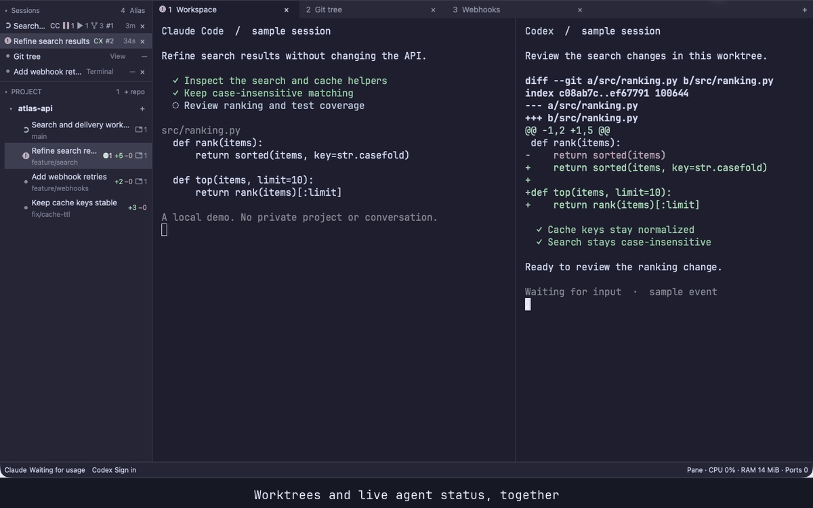
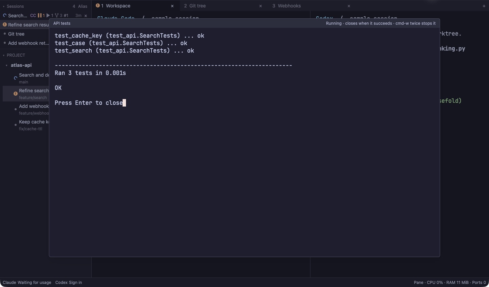
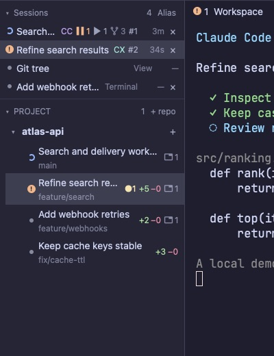
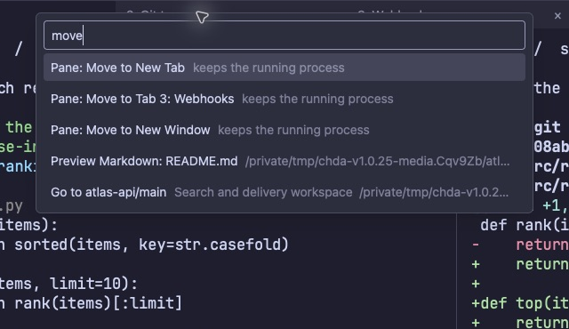
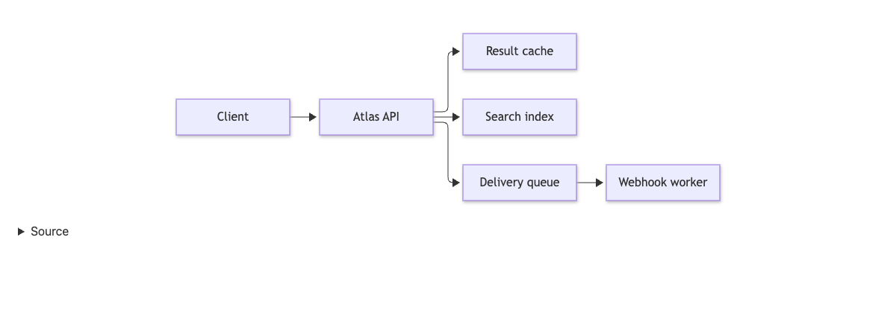

chda
A terminal with a git worktree sidebar and a live status board for coding agents.
brew tap magicsih/tap && brew trust magicsih/tap && brew install --cask chda
Linux downloads and installation

Captured in chda 1.0.25 with a local demo repository and sample agent events.
Why a worktree terminal
Ghostty inside
True color, Unicode, IME, search, reliable scrollback resizing, your Ghostty font and colors, and readable prompt text across theme changes. Follow links and space-containing paths across wrapped rows, show Kitty graphics, and preview Mermaid diagrams and Markdown offline. Review and edit selected agent text before copying it for sharing.
Keep your place, close safely
On macOS, keep shells and agents running when chda closes, then reconnect to the same processes. After the service or computer stops, read saved output and choose how to resume. Reorder and move panes without losing their process; close active agents with confirmation.
Update without stopping your work
Install a verified macOS update from one shared progress control. Running sessions stay in their separate service; later GUI updates retain images and PIDs. The first legacy transfer keeps its image restriction, and incompatible service protocols block installation.
The task in the title
See the repository and focused branch task together. Hover for the full context or open the worktree in your favorite editor.
Keep operational messages in view
Open the title-bar bell icon for timestamped messages, unread arrivals and exact agent-pane links. Closing the list returns typing focus without deleting history.
Live sessions at a glance
Open a branch with one click, or choose a menu action for a new terminal or an agent. Stable branch order, visible split numbers and readable marks keep Sessions and PROJECT clear while agents work.
One worktree per task
Create from any branch, label it with a note, read its diff, update from upstream, then merge and clean up with checks for unsaved or unpushed work. Opt in to selected local-file copies and ordered setup commands before opening a new worktree.
Read the Git tree
Choose View Git tree from the repository menu for commit connections, subjects, short hashes and branch, tag and HEAD labels. Browse in a read-only tab, refresh and restore it after restarting.
Review changes with private notes
Choose Review diff from a worktree menu. Select old or new lines, add private notes and preview a batch for an exact live agent conversation. Copy and focus its pane, then paste when ready.
Agents you can see
Track Claude Code, Codex, Gemini CLI, Copilot CLI, OpenCode and MiniMax Code. Gemini and MiniMax appear in default menus. See pane-specific status and notifications; resume exact supported conversations and retain failed output. MiniMax currently supports managed launches and live status.
Quota and local session resources
See Claude Code and Codex quota, clear loading and retry states, reset countdowns, and selected-pane CPU, memory and listeners. Open bottom-left details with labeled bars for each reported quota window. Claude usage updates keep other windows and their live sessions running.
Every action in one place
Press cmd-shift-p to find worktrees, launch or resume agents and run your own commands in a tab, split or floating terminal. Agents can use chda mcp to create worktrees, open tabs, read session output and wait for other agents.
Your terminal, your settings
Reuse your Ghostty font, colors and padding, with a light and dark theme pair that follows macOS. Edit chda's TOML settings without restarting. Homebrew and version-manager agents are found through your login shell's PATH.
Linux, with familiar terminal controls
Use X11 or Wayland with an AppImage or portable package. Copy and paste with Ctrl+Shift+C/V, keep Ctrl+C for the shell, and open actions from the Commands button.
Git history and live sessions


Your tools, in the worktree
Run your own commands in a tab, split or floating terminal. Move running panes between tabs and windows while keeping their processes and scrollback.



Diagrams and Markdown, rendered offline
Mermaid in an agent's answer opens as a diagram, and Markdown files open formatted, as local pages in your browser. Nothing is uploaded; scripts in the document do not run.



Work in chda. Read in Leaflit.
Leaflit gives Markdown plans, specs and notes their own macOS reading window. Keep a document beside your terminal while the agent works.
After installing Leaflit, run this from a shell in the chosen worktree:
leaflit ./plan.mdSaved changes appear automatically, with Find, Outline, Mermaid diagrams and LaTeX math. Switch to Source for a small correction to generated Markdown and save explicitly.
chda's built-in browser preview remains available for quick checks. Leaflit is an optional companion for Apple Silicon Macs running macOS 14 or later; chda's Intel Mac and Linux support does not extend to Leaflit.
Install
brew tap magicsih/tap brew trust magicsih/tap brew install --cask chda
macOS 14 or newer, Apple silicon or Intel. Signed and notarized. Needs git; gh, glab or tea add pull request badges for GitHub, GitLab or Gitea. Prefer a zip? Get it from the releases page.
Linux
Run chda on x86_64 with X11 or Wayland. Choose an AppImage or a portable archive; both contain the same application. Requires glibc 2.31 or newer, git and a compatible graphics driver.
Linux releases · Installation, checksums and shortcuts
Linux updates are manual downloads. Your configuration and saved sessions stay outside the package.
Questions
- How do I run several Claude Code agents in parallel?
- Give each task its own git worktree and run one agent in each. chda creates the worktree from the sidebar (or from the agent, through chda mcp), opens a tab in it, and shows every agent's state next to its branch: working, waiting for you, or done.
- Which coding agents does chda work with?
- Claude Code, Codex, Gemini CLI, GitHub Copilot CLI, OpenCode and MiniMax Code. Their status shows in the sidebar, on tabs and on the Dock icon. Codex is also tracked when you type codex directly in a chda zsh, bash or fish terminal with shell integration enabled.
- How is chda different from tmux or Ghostty?
- Ghostty is the terminal; chda uses its core (libghostty-vt) and adds what parallel agent work needs: a sidebar of worktrees with git and pull request badges, agent status, notifications when an agent waits, and merge-and-clean when a branch is done.
- Does chda read my prompts?
- Only on your computer. Hooks pass a session id, directory, event kind and time; the session list reads the agents’ local transcripts for each session’s first prompt and token usage. Nothing is sent anywhere. A daily GitHub release check can be disabled with
update-check = false. Clicking Update downloads the signed macOS update through Sparkle; downloads and installation never begin automatically. - Do I have to change my agents' config?
- chda leaves your config files alone. Most agents receive hook settings per launch; managed MiniMax Code launches install a chda-owned local plugin that reports nothing outside those launches. Existing disabled plugin state is preserved. The optional MCP server is added with the agent's own
mcp addcommand. - Can I just type codex in a terminal?
- Yes. In chda's zsh, bash and fish terminals, typing codex tracks working, waiting for input and finished turns with shell integration enabled. Existing aliases and functions are kept. If your own wrapper bypasses the helper, use Run Codex from the worktree menu. See the README for Codex terminal-title requirements.
- Can I launch Homebrew-installed agents from the Dock?
- Yes. chda reads PATH from your login shell's startup files and uses it to find and run agents, including Homebrew and version-manager installations. Restart chda after changing your shell's PATH. If startup files take longer than two seconds, chda keeps reading in the background for up to 20 seconds and retries after 30 seconds, two minutes and then every ten minutes. Until then it uses the inherited PATH; agents and usage appear once the shell PATH arrives.
- Linux or Windows?
- Linux x86_64 has AppImage and portable packages for X11 and Wayland. See the Linux installation guide for graphics requirements and the verified environment matrix. Windows builds in CI; a desktop release remains planned.